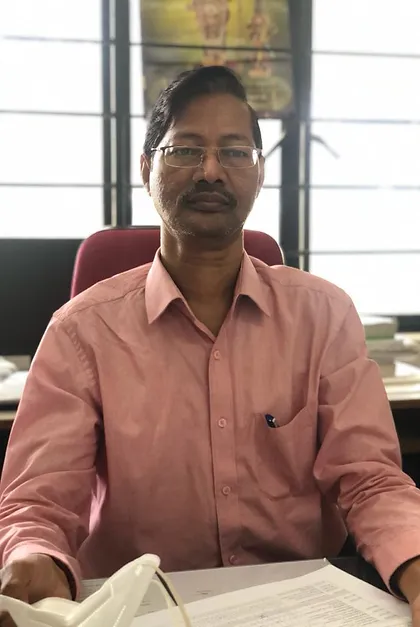

Newton’s Apple is a monthly magazine run by students of E.C.E. at Vasavi College of Engineering. Tune in to find
cool and interesting information!
Readers of the magazine would have an absolute doubt on the decision of the title of this magazine – “What’s the
connection between an electronic magazine and Newton or his apple?” It’s not because this magazine works on any
law of Newton. Rather, there is a more logical and comprehensive way of putting it forward; that is – we at
‘Newton’s Apple’ feel that learners should have questions whenever they come across new observation or for that
matter any concept through their journey of understanding the science. Had there been no question arisen in the
mind of Newton three centuries ago about the free fall of an apple, the mankind might not have gotten to this
far in its pursuit of understanding the things happening around the universe.
Hope every reader of this magazine likes the title and the story behind it. Further, any comments and QUESTIONS
on the title will be appreciated.

"Newton's apple, being the platform for many students to share their ideas, opinions on different
subjects and concepts, is very effective in presenting and reaching all the student community and I
completely appreciate their efforts and commitment to integrity."
VKM - Assistant Proffessor (ECE)
VKM - Assistant Proffessor (ECE)

"Newtons Apple, Has served as our department magazine over
generations ,filling the gap of imbibing general knowledge into our students , eventually playing the part of alternate teacher.
Correctly used this is no less than an opportunity to create
a self sustaining environment of knowledge among young Engineers."
Dr.E.Sreenivasa Rao (Prof. & HOD - ECE)
Dr.E.Sreenivasa Rao (Prof. & HOD - ECE)